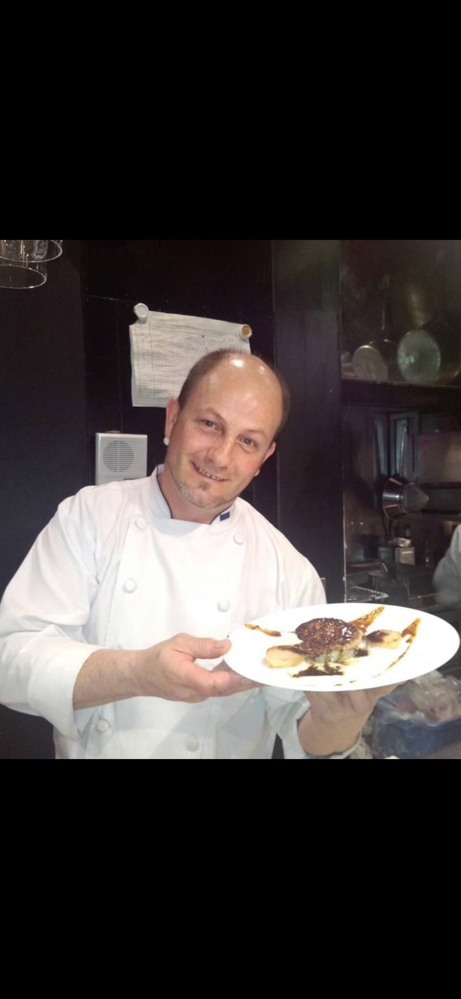
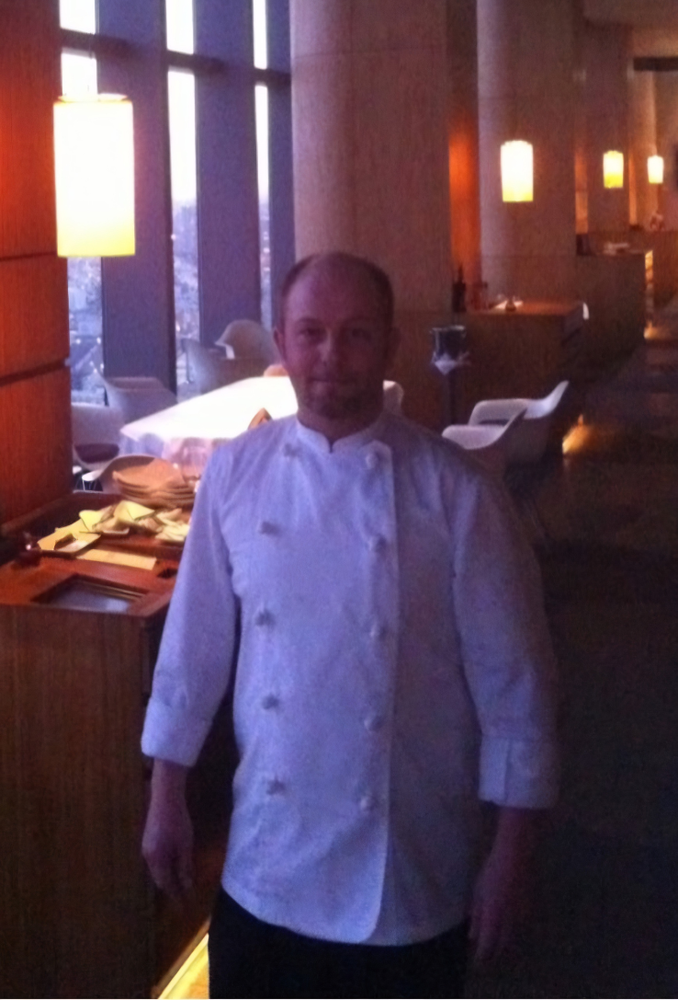
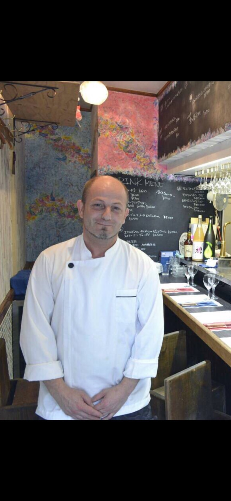
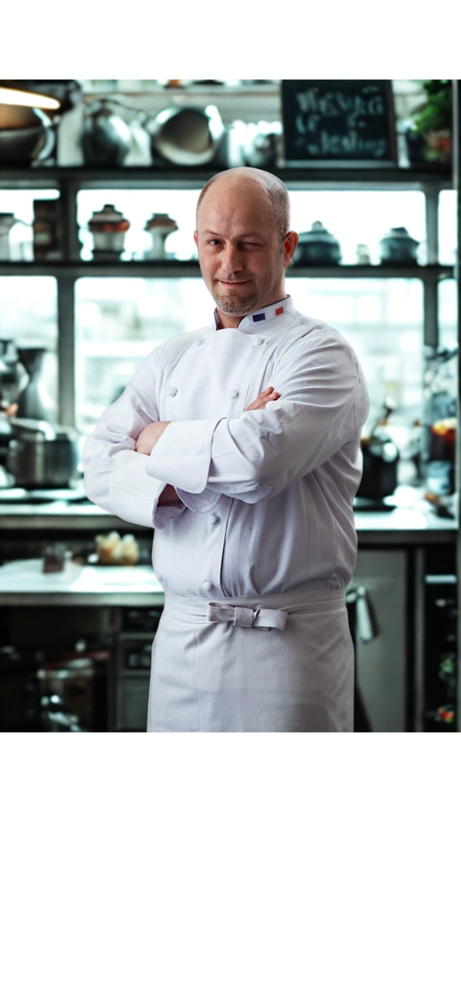

· le Chef ·
André
Chef · Bon' Ap · 伊豆高原 Chef · Bon' Ap · Izu Kogen
食を愛し楽しむ心を忘れない。 Never lose the love and joy of good food.
· La Trajectoire ·
アンドレの軌跡 The Journey of a Chef
1980s
Paris
パリ生まれ。14歳でキッチンに立ち、ミシュランの星を持つシェフのもとで修業を積む。若き日のアンドレがそこで学んだのは、技術だけではなく、食材への誠実さと料理に込める意志だった。
22歳にして、パリのレストランでシェフに就任。
Born in Paris, André entered the kitchen at 14, training under a Michelin-starred chef. What he learned there was more than technique — it was honesty toward ingredients, and the will to put oneself fully into every dish.
At just 22, he became head chef at a Parisian restaurant.


1990s — 2000s
Le Monde
フランスにとどまらず、イタリア、ボラボラ島、イギリス、オーストラリア、ニューカレドニアへ。それぞれの土地の食材、文化、気候がアンドレの料理を深め、広げていった。 From France, André moved outward — Italy, Bora Bora, the UK, Australia, New Caledonia. Each land, its ingredients, culture, and climate, deepened and widened his cuisine.


c. 2005 — Tokyo
神楽坂・銀座
東京へ。神楽坂の「メゾン・ド・ラ・ブルゴーニュ」、同じく神楽坂の「フレンチダイニング」、そして銀座の「俺のフレンチ」で、14年間にわたり第一線のキッチンに立ち続けた。 Tokyo. For 14 years, André stood at the forefront of the city's dining scene — at "Maison de la Bourgogne" and "French Dining," both in Kagurazaka, and later "Oreno French" in Ginza.
2023 — présent
伊豆高原
2023年、静岡県伊東市・伊豆高原へ移住。「もっと気軽にフレンチを楽しんでほしい」という思いから、Bon' Apをオープンした。嘘のない誠実な食材選びと、本場の確かな技術で、おうちや旅先のテーブルを特別なレストランへと変える。パリから始まり、世界を巡り、東京で磨き上げた料理は今、この土地の空気と食材の中に息づいている。 In 2023, André moved to Izu Kogen in Ito, Shizuoka. Wanting people to enjoy French cuisine more casually, he opened Bon' Ap — bringing honest, sincere ingredient selection and authentic technique to turn any table, at home or on a trip, into something special. The cuisine that began in Paris, traveled the world, and was refined in Tokyo now breathes in the air and ingredients of this place.

· Les Produits ·
食材へのこだわり Our Commitment to Ingredients
生産者に直接会い、仕入れる圧倒的な鮮度とハイクオリティ。伊豆半島の農家さんを中心に、良いものがあれば北海道まで足を運びます。無農薬や薬・ワクチンに頼らず育てられた、安心できる食材をできる限り使用しています。 André meets producers face to face, sourcing ingredients of outstanding freshness and quality. Centered on farmers across the Izu Peninsula, he will travel as far as Hokkaido when something exceptional calls for it. Wherever possible, he uses ingredients raised without pesticides, drugs, or vaccines — food you can trust.
· La Philosophie ·
アンドレの思い André's Philosophy
— 準備中 —